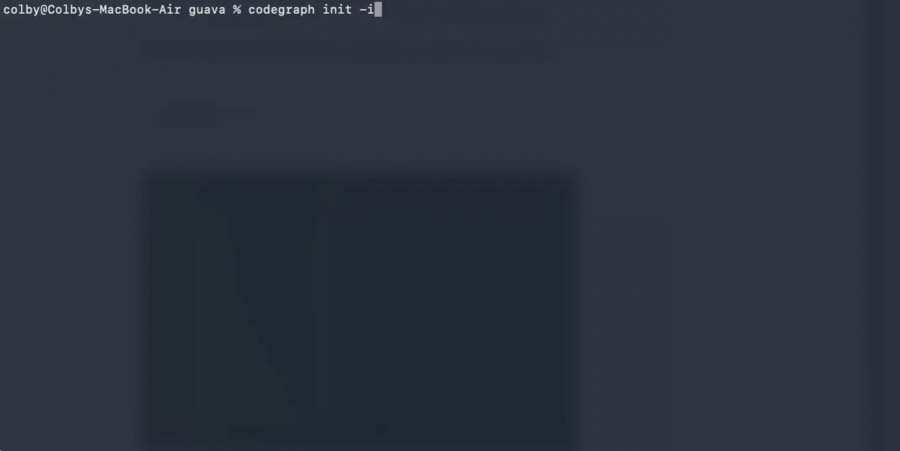

CodeGraph 为 Claude Code、Codex、Cursor、Hermes Agent 等编码 Agent 提供一个本地预索引图谱层：先把仓库变成语义知识图，再用 MCP 工具直接查图回答架构问题，少扫文件、少跑 grep、少花 token。

它不是“更强的 grep”。它是在仓库之上加了一层可查询的图谱，让 Agent 直接问结构、问依赖、问影响面。
curl -fsSL https://raw.githubusercontent.com/colbymchenry/codegraph/main/install.sh | sh
irm https://raw.githubusercontent.com/colbymchenry/codegraph/main/install.ps1 | iex
npm i -g @colbymchenry/codegraph
codegraph install
cd your-project codegraph init